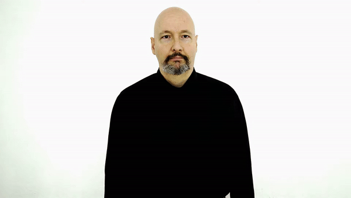
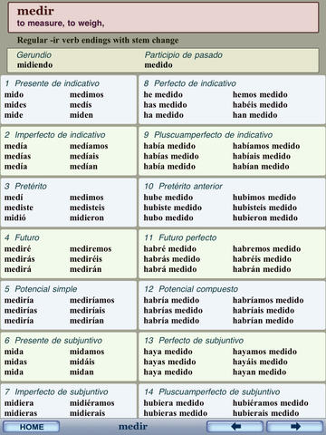

# Morphological Nuances ### LIGN 42 - Will Styler --- ### Today's Plan - Morphological Productivity - Derivation and Inflection --- ## One Cool Note --- ### Signed language does a lot of Simultaneous Morphology Thanks to [Dr. Bill Vicars](https://www.youtube.com/@aslu) for the following videos, and to Lexi Ricasata for collecting them. --- ### "I show you" <img class="r-stretch" src="morphology/asl_showyou.gif"></img> --- ### "You show me" </img> --- ### "He/she/they shows him/her/them" </img> --- ### So, don't think that morphemes need to be separated by time! --- ## Morphological Productivity --- ### How do you make a plural in English? - List the morpheme(s) which let you say 'Now there are two of them' --- ### What's the plural of... - wan - bleeb - gand - rop - fliss - qwerp - blen - efla - eebel --- ### We have many more options than we choose! - What's up with that? --- ### Let's make some words - **Bases**: hug, love, free, corrupt, sing, cute, meme - **Prefixes**: re-, un-, pre-, de-, - **Suffixes**: -en, -ed, -er, -ee, -ize, -est - *Tell me some combinations that work* - *Tell me some combinations that **don't** work* --- ### Give me more words using... - **-holic** from 'alcoholic' - **cran-** from 'cranberry' - **admi-** from 'admissions' - **del-** from 'deleted' --- ### So we have... - Affixes that exist in the language that don't get used for new words - Affixes that exist in the language which only work with some words - Evidence that although some things can be 'broken off' and still used, but others really can't. --- ### How do we describe when a morpheme *can* be used, or perhaps, when it *can't* --- ### Morphological Productivity - The degree to which a grammatical process is in use by speakers - Can we use this morphological pattern with a brand new base? - Is the use of this morpheme *constrained*? Or, *where can it apply?* --- ### In language, lots of things constrain productivity - Part of speech (e.g. plural only attaches to nouns, '-ee' only attaches to verbs - Sound structure (e.g. free+-ee sounds illegal) - Even meaning (e.g. some affixes don't make any sense on some words) --- ### ... but many forms are *very* productive - We can use them to create a word we've never heard, and *it just works* - "Uh, I need an adjective for 'simp'... uh... simpish?" - Everybody understands, nobody's confused, it feels right, and we move on - **Productive morphology is *boring*** - It just works, and we don't think twice --- ### Use an affix on a word where you've never used it before, creating something boring and normal --- ### ... but you can make morphological changes that aren't boring! - They're understandable, but seem 'off', they 'raise eyebrows' - They feel like *new words*, or like you've *coined a phrase* or are doing 'wordplay' - They may even take a moment to figure out - We can call these not productive, so much as **creative** --- ### Creative Words - "Unbreak my heart, uncry these tears" - "Can you stop linguisting and help me vacuum?" - "Put down the haterade" - "The problem was solved computeringly" - "It looks like one of those awful low effort TikTok DIY Tutorials, so TikTacky" --- N-now th-that that don't kill me Can only make me stronger I need you to hurry up now 'Cause I can't wait much longer I know I got to be right now 'Cause I can't get much wronger --*Kanye West's 'Stronger'* --- ### In chat, give me a creative use of an existing affix! --- ### Creativity often builds new words - Blends like 'frenemy' or 'mansplain' or 'covidiot' or 'situationship' - Clipping words down like 'fam' or 'totes' or 'catching an L' or 'pog' --- ### Productivity and Creativity are a continuum - It's hard to say when an affix is being used 'off label' - Measurements of how 'innovative' a usage is are tough to do - There's not a hard and fast line - ... but we can usually tell when a combination is expected, or exceptional --- ### Give me... - Some new words which you *instantly* understood and were boring - Some new words which you *instantly* understood, and were **neat** - Some new words which *took you a bit to understand* --- ### We'll think more about this idea this week! - ... but we should think a bit more about one other phenomenon --- ## Derivational vs. Inflectional Morphology --- ### How many independent words are in each group? - cat, penguin, bear, squirrel, dog - cat, cats, cat's - clean, red, moist, thrown - white, whiter, whitest - yeet, drag, suspect, eat, drink - prove, proves, proved, proven, proving - yeet, yeets, yote, youghten, yeeting --- ### Some morphology *creates new forms of existing words* - "For this sentence or meaning, I need a different form, I'd better add something" - Making it a word plural, possessive, comparative, superlative - Marking verbal person (e.g. "I go" vs "He goes"), past tense, past and present participles - *There is no doubt that these forms are 'the same word'* --- ### We call this 'inflectional Morphology' - A morphological process which change the meaning of a word *in a given linguistic or grammatical context* - cat, cats, cat's - white, whiter, whitest - yeet, yeets, yote, youghten, yeeting --- ### English: "Mom, can we stop and get inflectional morphology?" - ### Mom: "We have inflectional Morphology at home" --- ### Inflectional morphology at home: <img class="r-stretch" src="morphology/english_inflectional.jpg"> --- ### Other languages use much more of it!  --- ### Inflectional Morphology *modifies an existing word to suit the grammatical context* - You get a new form of a word, but never a 'new word' --- ### Derivational morphology *creates new words* - "I don't have a word for this, but I know a way I can make one" - cat -> catty, catlike, cattish, catter, cathouse - California -> Californian, Californiaish - build -> rebuild, overbuild, underbuild, buildup, building, builder --- ### Let's hear some new words made from existing words! --- ### Adding Derivational affixes often changes characteristics of the words - Not all words can take all affixes - Californiaishly - They'll change the part of speech (e.g. from a noun to a verb) - They'll change the meaning in less predictable ways - Inflectional morphology creates boring, predictable forms - Trucker, Hooker, Adapter, YouTuber, Steeler, Waiter --- ### Dictionaries care about derivational morphology - Because meanings can be unpredictable, derivation tends to merit explanation and description - Derivation is viewed as 'adding something new to the dictionary', generally speaking - ... although dictionaries don't always add all derived forms (e.g. un- or re-affixes are very predictable and might be skipped) --- ### Compounding is also a thing - Compounding takes two existing free words and combines them for a new meaning - Laptop, backpack, cellphone, fireplace, lipstick - Most Compounds have a 'head' which controls the part of speech and part of the meaning - Bookkeepers, Light Years (vs. años luz), sidestepping, grad school - Compounding acts like derivation - New words are created, and with unpredictable meanings --- ### Compounding meanings can be odd too - Salad Dressing, Butt Dial, Booty Call, Big Mac, Blowhard, pushover, Hawkeye - Substitutions feel **very** creative - Lapbottom? Butt text? Booty Skype? Little Mac? Eyestick? --- ### Let's look at some new words from your research --- ### So, we have derivational and inflectional morphology - Derivational morphology is used to build new words - Inflectional morphology changes their meanings in predictable ways in sentences - The line between these can get blurry in some cases - ... and there's a lot of nuance and uncertainty as to how this actually works in the mind --- ### I think all of this works for other linguistic forms - There are productive and creative uses of templates - There are inflectional and derivational morphological processes - Compounding is absolutely a thing in memes - ... and meme compounds have heads --- ## Important Definitions **Morphological Productivity**: The ability of a morphological phenomenon to apply fluently and fluidly to new words. --- **Creativity**: The application of morphological phenomena outside of the expected domain, resulting in something that feels 'new', unexpected, or like a 'brand new word' --- **Derivational Morphology**: Attaching affixes that change the part of speech of the root, or change something important about the meaning --- **Inflectional Morphology**: Inflectional morphology predictably changes the meaning of the word in the sentence, but doesn't change the part of speech or meaning of the whole word in a deep way. --- **Compounding**: A morphological process which comes from combining two existing free morphemes (not affixes) into a new word